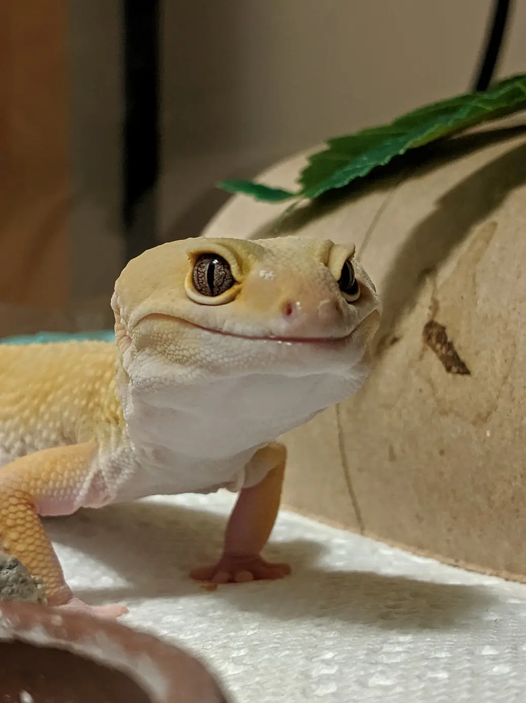

Эта страница про Эублефара
Видео про Эублефара
Звуки Эублефара
Место памятника Эублефара
Иранский эублефар[1], или геккон Аримана[1] (лат. Eublepharis angramainyu) — наземная ящерица из рода эублефаров. Эндемик Ирака и Ирана, редкий вид. К 1988 году был известен по немногим музейным экземплярам. Биология вида на тот момент была практически не изучена, а меры охраны не разработаны. Научное название образовано от имени Аримана (Ангра-Майнью) — зороастрийского бога тьмы.Внешний вид Внешне очень напоминает туркменского эублефара, но крупнее его: до 25 см с хвостом.В природе живёт до 10 лет, террариумных условиях: 15, 20 лет при хорошем содержании.
РаспространениеОбитает на юго-востоке Ирака и в сопредельных районах Ирана. Активен ночью. Днём прячется под камнями и в норах грызунов. Также является популярным домашним питомцем по всему миру.
ПитаниеПитается насекомыми и другими членистоногими, мелкими ящерицами, а также мелкими грызунами. При содержании в террариумных условиях нужно кормить исключительно насекомыми такими как сверчки, мучные черви, зоофобусы, гусеницы табачного бражника а также туркменскими и мраморными тараканами.
